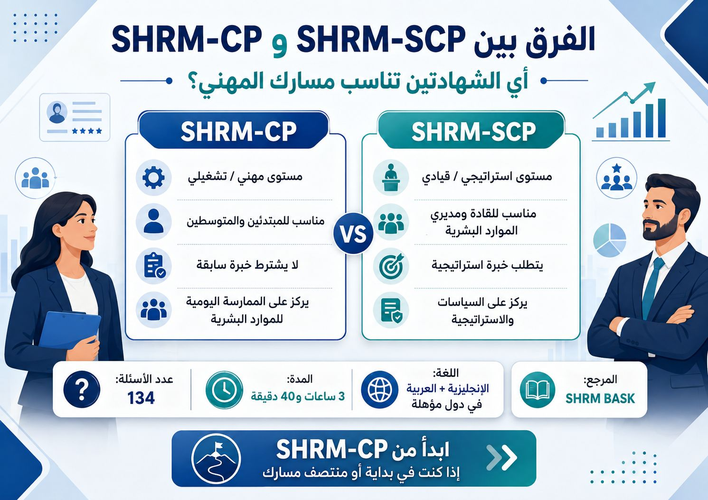

الفرق بين SHRM-CP وSHRM-SCP في 2026: أي شهادة تناسب مسارك المهني؟

دليل شامل: كل ما تحتاج معرفته عن شهادة SHRM-CP
إذا كنت تعمل في الموارد البشرية Human Resources أو تخطط لبناء مسار مهني فيها، فمن المحتمل أن تصادف اثنتين من أشهر شهادات جمعية إدارة الموارد البشرية SHRM:
SHRM-CP – SHRM Certified Professional
و
SHRM-SCP – SHRM Senior Certified Professional
ورغم أن الشهادتين تعتمدان على إطار SHRM Body of Applied Skills and Knowledge – SHRM BASK، فإنهما لا تستهدفان نفس المستوى المهني.
الفرق الأساسي يمكن تلخيصه ببساطة:
SHRM-CP تركز على الممارسة التشغيلية والمهنية للموارد البشرية، بينما SHRM-SCP تستهدف من يعملون على المستوى الاستراتيجي ويقودون سياسات ومبادرات HR على مستوى المؤسسة.
وتوضح SHRM رسميًا أن SHRM-CP مصممة للممارسين في المستوى التشغيلي، بينما SHRM-SCP مخصصة لمتخصصي HR الذين يعملون على المستوى الاستراتيجي.
إذا كنت في بداية أو منتصف مسارك وتريد التحضير للمستوى المهني، يمكنك الاطلاع على دورة SHRM-CP في معهد مسارتك.
| العنصر | SHRM-CP | SHRM-SCP |
|---|---|---|
| الاسم الكامل | SHRM Certified Professional | SHRM Senior Certified Professional |
| الجهة | SHRM | SHRM |
| المستوى | تشغيلي / مهني | استراتيجي / قيادي |
| الفئة الأساسية | HR Professionals والمبتدئون والمتوسطون | Senior HR Professionals |
| طبيعة العمل | تنفيذ السياسات والعمليات اليومية | تطوير السياسات والاستراتيجيات |
| الخبرة المطلوبة | لا تشترط SHRM خبرة سابقة | 3 سنوات من العمل الاستراتيجي في HR |
| الدرجة العلمية | غير مطلوبة | غير مطلوبة |
| عدد الأسئلة | 134 سؤالًا | 134 سؤالًا |
| مدة الاختبار | 3 ساعات و40 دقيقة | 3 ساعات و40 دقيقة |
| Knowledge-Based | 80 سؤالًا | 80 سؤالًا |
| Situational Judgment | 54 سؤالًا | 54 سؤالًا |
| المرجع | SHRM BASK | SHRM BASK |
| الأنسب | تنفيذ وممارسة HR | قيادة واستراتيجية HR |
هيكل الاختبار الحالي موحد من حيث العدد والوقت: 134 سؤالًا خلال 3 ساعات و40 دقيقة مقسمة إلى جزأين مدة كل منهما 110 دقائق، منها 80 Knowledge-Based و54 Situational Judgment.
الفرق الحقيقي إذًا ليس:
“SCP لديها أسئلة أكثر.”
بل:
مستوى الكفاءة والحكم المهني الذي تقيسه الأسئلة.
شهادة SHRM-CP موجهة للأشخاص الذين يقومون بمهام HR أوHR-related على المستوى التشغيلي، وكذلك لمن يرغبون في بدء مسار مهني في الموارد البشرية.
وتوضح SHRM أن المتقدم لا يحتاج إلى مسمى HR محدد ولا إلى شهادة جامعية أوخبرة سابقة في الموارد البشرية للتقديم على SHRM-CP، رغم أن امتلاك معرفة أساسية بممارسات HR يساعد في الاستعداد.
أمثلة على العمل المرتبط بمستوى SHRM-CP
تطبيق سياسات الموارد البشرية.
دعم الموظفين والمديرين.
إدارة عمليات التوظيف.
Employee Relations.
Performance Management.
Learning & Development.
Compensation & Benefits.
تنفيذ إجراءات وسياسات HR.
التعامل مع العمليات اليومية للموارد البشرية.
ولهذا تعتبر SHRM-CP أكثر ملاءمة لمن يريد بناء قاعدة مهنية شاملة قبل الانتقال إلى أدوار استراتيجية أكبر.
إذا كان هذا هو مستواك الحالي، يمكنك مراجعة برنامج التحضير لشهادة SHRM-CP في مسارتك، والذي يغطي منهج الشهادة والكفاءات المطلوبة والتطبيق العملي والاختبارات التجريبية.
شهادة SHRM-SCP – Senior Certified Professional تستهدف مستوى مختلفًا.
SHRM تحددها لمن لديهم 3 سنوات على الأقل من الخبرة في أداء أعمال HR أوHR-related على المستوى الاستراتيجي.
كما يوجد مسار آخر لحامل SHRM-CP الذي:
يحمل SHRM-CP منذ 3 سنوات على الأقل.
ويعمل في دور استراتيجي أوينتقل حاليًا إلى دور استراتيجي.
وتشمل طبيعة العمل الاستراتيجي وفق SHRM أمثلة مثل:
تطوير سياسات HR.
تصميم الإجراءات المؤسسية.
الإشراف على عمليات HR المتكاملة.
قيادة وظيفة الموارد البشرية.
مواءمة استراتيجية HR مع أهداف المؤسسة.
ليس مجرد امتلاك مسمى:
HR Manager
فالمسمى الوظيفي وحده لا يحدد أهلية SHRM-SCP.
العمل الاستراتيجي يعني أن تكون مشاركًا في قرارات مثل:
Workforce Strategy.
Organizational Design.
Leadership Development.
Talent Strategy.
Succession Planning.
Change Management.
Culture.
Strategic Workforce Planning.
مواءمة HR مع Business Objectives.
SHRM تشترط أيضًا لمن يعتمد على الخبرة الاستراتيجية أن يكون قد خصص 1,000 ساعة على الأقل في السنة لأعمال HR الاستراتيجية المؤهلة.
إذا كنت تريد تطوير هذه المهارات قبل التفكير في المستوى الاستراتيجي، فإن دورة شريك أعمال الموارد البشرية HRBP من المسارات المرتبطة مباشرة بربط الموارد البشرية بالأعمال والاستراتيجية. وتصف صفحة البرنامج نفسها HRBP بأنه انتقال من دور HR التشغيلي إلى دور أكثر استراتيجية وتأثيرًا.
المقال القديم كان يربط سنوات الخبرة بالمؤهل الدراسي، مثل:
بكالوريوس = سنة، دبلوم = سنتان…
هذه لم تعد شروط SHRM الحالية.
الشروط الحالية
| الشرط | SHRM-CP | SHRM-SCP |
|---|---|---|
| درجة جامعية | غير مطلوبة | غير مطلوبة |
| خبرة HR سابقة | غير مطلوبة | مطلوبة |
| خبرة استراتيجية | لا | 3 سنوات |
| مسار بديل | — | SHRM-CP لمدة 3 سنوات + دور استراتيجي أوالانتقال إليه |
| مسمى HR رسمي | غير مطلوب | غير مطلوب |
هذه المعايير منشورة حاليًا في صفحة Eligibility الرسمية لـSHRM.
نعم من ناحية شروط الأهلية الحالية.
SHRM-CP موجهة أيضًا للأشخاص الذين يسعون لدخول مجال الموارد البشرية وللطلاب المؤهلين، ولا تشترط خبرة HR سابقة أوشهادة جامعية للتقديم العام.
لكن توجد نقطة مهمة:
كونك مؤهلًا لدخول الاختبار لا يعني أن الشهادة وحدها ستعوض ضعف الخبرة العملية.
لذلك إذا كنت في بداية HR، فالأفضل الجمع بين:
SHRM-CP + تطبيق عملي + فهم العمليات + Data Skills + Business Skills
ويمكن مثلًا إضافة دورة تحليل بيانات الموارد البشرية HR Data Analysis لتقوية قدرتك على قراءة مؤشرات التوظيف والأداء والتعويضات والاحتفاظ بالموظفين واتخاذ قرارات HR مبنية على البيانات.
من أكبر الأخطاء في المقالات القديمة القول إن:
CP = 160 سؤالًا بتوزيع معين
و:
SCP = 160 سؤالًا بتوزيع مختلف.
الهيكل الحالي واحد من حيث عدد الأسئلة.
هيكل الاختبارين
| البند | SHRM-CP | SHRM-SCP |
|---|---|---|
| إجمالي الأسئلة | 134 | 134 |
| Knowledge-Based | 80 | 80 |
| Situational Judgment | 54 | 54 |
| المدة | 3:40 ساعة | 3:40 ساعة |
| عدد الأقسام | 2 | 2 |
| مدة القسم | 110 دقيقة | 110 دقيقة |
وتتضمن الاختبارات أيضًا 24 Field-Test Items لا تدخل في النتيجة ويتم خلطها مع بقية الأسئلة دون تحديدها للمتقدم.
لأن معيار الكفاءة أعلى.
SHRM توضح أن:
SHRM-CP تقيس مستوى HR التشغيلي.
SHRM-SCP تقيس مستوى HR الاستراتيجي.
وتظهر معدلات النجاح العالمية التي تنشرها SHRM حاليًا فرقًا أيضًا:
| الاختبار | Global Pass Rate المنشور |
|---|---|
| SHRM-CP | 69% |
| SHRM-SCP | 52% |
لكن هذه النسب لا تعني أن لديك “احتمالًا ثابتًا” للنجاح؛ مستوى الخبرة ومدى ملاءمة الاختبار لطبيعة عملك يؤثران بصورة كبيرة.
هذه من أهم أجزاء اختبارات SHRM.
بدل سؤال:
“عرّف Performance Management.”
قد تحصل على سيناريو مؤسسة يحتوي على:
مشكلة موظفين.
مدير.
سياسة.
تعارض مصالح.
تغيير تنظيمي.
قرار متعلق بالمواهب.
ثم يُطلب منك تحديد التصرف الأكثر فعالية.
الاختبار بذلك لا يقيس الحفظ فقط، بل:
Judgment + Analysis + Decision Making.
وتوضح SHRM أن أسئلة Situational Judgment مصممة لقياس الحكم واتخاذ القرار في سيناريوهات العمل.
يمكن تبسيط الفرق بهذا المثال.
سيناريو
معدل دوران الموظفين ارتفع بصورة كبيرة.
مستوى SHRM-CP
قد يركز على:
تحليل بيانات Turnover.
تنفيذ Exit Interviews.
التواصل مع المديرين.
مراجعة الإجراءات.
دعم تطبيق خطة معالجة.
مستوى SHRM-SCP
قد يركز أكثر على:
تأثير Turnover على الاستراتيجية.
Workforce Planning.
Culture.
تكلفة فقد المواهب.
تصميم استراتيجية Retention.
مواءمة الحل مع Business Strategy.
الاثنان يتعاملان مع نفس المشكلة.
لكن:
واحد يعمل داخل النظام، والآخر يساعد في تصميم اتجاه النظام.
SHRM توفر اختبارات SHRM-CP وSHRM-SCP باللغة الإنجليزية، كما توفر النسخة العربية في مراكز Prometric داخل مجموعة من الدول العربية المؤهلة، ومن بينها السعودية ومصر والإمارات ودول عربية أخرى.
لذلك لا يصح كتابة:
SHRM-CP عربية وSHRM-SCP إنجليزية فقط.
المهم أيضًا التفريق بين:
لغة التدريب
و
لغة الاختبار الرسمي.
فيمكن أن يكون الشرح التدريبي بالعربية مع استخدام المصطلحات المهنية الإنجليزية للاستعداد للمحتوى الدولي.
رسوم الاختبارين الرسمية متساوية حاليًا.
رسوم Early Bird
| الفئة | SHRM-CP | SHRM-SCP |
|---|---|---|
| SHRM Member | 350$ | 350$ |
| Nonmember | 450$ | 450$ |
الرسوم القياسية Standard
| الفئة | SHRM-CP | SHRM-SCP |
|---|---|---|
| SHRM Member | 399$ | 399$ |
| Nonmember | 499$ | 499$ |
وتوضح SHRM أن الأسعار تشمل رسوم Application غير المستردة وفق نوع فترة التسجيل.
نقطة مهمة
لا تخلط بين:
Exam Fee
و
Training Course Fee
فسعر الدورة التدريبية يختلف من مركز إلى آخر ومن برنامج إلى آخر، بينما رسوم الاختبار الدولي تحددها SHRM.
SHRM تستخدم Testing Windows وليست امتحانات مفتوحة طوال العام.
في 2026، نافذة الاختبار الثانية هي:
1 ديسمبر 2026 إلى 15 فبراير 2027
وفترة Early Bird للتقديم عليها تمتد حتى:
31 أغسطس 2026
ثم تبدأ الفترة القياسية من سبتمبر.
إذا كنت تستعد لاختبار SHRM-CP، من الأفضل ربط خطة الدراسة بموعد Window محدد بدل المذاكرة بدون Target Date.
بالنسبة للشخص الذي:
يدخل HR لأول مرة.
يعمل كـHR Specialist.
يعمل في Recruitment.
Employee Relations.
Learning & Development.
HR Operations.
لديه خبرة محدودة في الموارد البشرية.
فالاختيار المنطقي غالبًا:
SHRM-CP
لأن تصميمها يتوافق أكثر مع العمل التشغيلي والممارسة المهنية اليومية.
يمكنك البدء من دورة SHRM-CP للموارد البشرية في معهد مسارتك.
لا تعتمد على كلمة:
Manager
وحدها.
اسأل:
ما طبيعة عملي؟
إذا كنت تدير:
Attendance.
Recruitment Operations.
Employee Relations.
تنفيذ السياسات.
فقد يظل مستوى SHRM-CP أقرب لعملك.
أما إذا كنت:
تضع استراتيجية HR.
تعمل مع الإدارة التنفيذية.
تقود Workforce Planning.
تصمم السياسات.
تربط HR بخطة المؤسسة.
تقود Transformation.
فأنت أقرب لطبيعة SHRM-SCP، بشرط استيفاء الأهلية الرسمية.
ولمن يريد الانتقال من التشغيل إلى الشراكة الاستراتيجية مع الإدارة، فإن دورة HRBP – شريك أعمال الموارد البشرية تمثل Internal Link منطقيًا جدًا هنا بدل دفع القارئ مباشرة إلى Course غير موجودة على الموقع.
لا يوجد شرط عام بأن تحصل على SHRM-CP أولًا.
إذا كنت تستوفي شرط SHRM-SCP من خلال 3 سنوات من العمل الاستراتيجي المؤهل، يمكنك التقديم مباشرة.
لكن يوجد مسار بديل يعتمد على:
حمل SHRM-CP لمدة 3 سنوات + العمل في أوالانتقال إلى دور استراتيجي.
لذلك التسلسل:
SHRM-CP SHRM-SCP
منطقي لكثير من الأشخاص، لكنه ليس قاعدة إلزامية للجميع.
ليس عليك انتظار SHRM-SCP حتى تطور نفسك.
يمكنك بناء مجموعة مهارات متكاملة حول اعتماد SHRM-CP.
المسار الاستراتيجي
بعد SHRM-CP:
مناسبة لمن يريد ربط ممارسات HR بأهداف المؤسسة ودعم القيادة والانتقال إلى دور أكثر استراتيجية.
المسار التحليلي
بعد SHRM-CP:
مناسبة لمن يريد استخدام:
KPIs.
HR Metrics.
Workforce Data.
Turnover.
Compensation Data.
Performance Data.
في قرارات الموارد البشرية.
المسار الدولي البديل
يمكنك مقارنة SHRM مع مسارات أخرى مثل:
والتي تستهدف اعتماد HRCI المهني الدولي. صفحة PHRi في مسارتك نفسها تربط المسار مع SHRM-CP وHRBP وHR Data Analysis حسب الهدف المهني.
تطوير أوسع في HR
هناك أيضًا:
لمن يريد التوسع في مسار مهني مختلف في إدارة الموارد البشرية والتطوير المؤسسي.
| وضعك الحالي | الاختيار الأقرب |
|---|---|
| تريد دخول HR | SHRM-CP |
| حديث التخرج | SHRM-CP |
| HR Specialist | SHRM-CP |
| Recruitment Specialist | SHRM-CP |
| Employee Relations | SHRM-CP |
| HR Generalist | SHRM-CP |
| HR Manager تشغيلي | SHRM-CP قد يكون الأنسب |
| HRBP استراتيجي بخبرة كافية | راجع أهلية SHRM-SCP |
| HR Director | SHRM-SCP غالبًا أقرب |
| Head of HR | SHRM-SCP غالبًا أقرب |
| قائد استراتيجية HR | SHRM-SCP |
| تريد الانتقال من التشغيل للاستراتيجية | SHRM-CP + HRBP ثم تقييم SHRM-SCP |
السؤال شائع، لكنه موضوع مختلف عن SHRM-CP vs SHRM-SCP.
SHRM-CP وSHRM-SCP من SHRM.
أما:
PHRi
فهي من HRCI.
لذلك إذا كنت تقارن بين هيئات اعتماد ومسارات دولية مختلفة، يمكنك الاطلاع على دورة PHRi في مسارتك، ومقارنتها مع برنامج SHRM-CP بناءً على خبرتك والمسار الذي تستهدفه.
لا أنصح بربط كل شهادة براتب ثابت مثل:
SHRM-CP = 15 ألف
أو:
SHRM-SCP = 40 ألف
لأن الراتب يتحدد أساسًا حسب:
المسمى الوظيفي.
سنوات الخبرة.
القطاع.
حجم المؤسسة.
المدينة.
المسؤولية الإدارية.
اللغة.
المهارات.
نطاق العمل الاستراتيجي.
SHRM تشير في بياناتها إلى أن حملة اعتماد SHRM أفادوا بمتوسطات دخل أعلى مقارنة بغير المعتمدين، لكن هذا لا يعني أن الشهادة نفسها تسبب راتبًا محددًا لكل شخص.
الأدق SEO وE-E-A-T هو مناقشة القيمة المهنية بدل اختراع Salary Bands لكل Certification.
الاختباران يعتمدان على:
SHRM Body of Applied Skills and Knowledge – SHRM BASK
وهو الإطار الذي يحدد المعرفة والكفاءات السلوكية المطلوبة من متخصصي الموارد البشرية.
وتوضح SHRM أن نحو نصف الأسئلة يتعلق بالمجموعات السلوكية، بينما يتوزع النصف الآخر تقريبًا على مجالات معرفة الموارد البشرية.
ولهذا فإن التحضير الفعلي لا يجب أن يركز على حفظ قوانين ومصطلحات فقط، وإنما أيضًا على:
Leadership.
Communication.
Ethical Practice.
Business Acumen.
Consultation.
Analytical Aptitude.
Relationship Management.
Global Mindset.
إلى جانب المجالات الوظيفية للموارد البشرية.
استخدم ثلاثة أسئلة.
1. ماذا تفعل اليوم؟
هل تنفذ عمليات HR؟
أم تصمم استراتيجيتها؟
2. ما مستوى قراراتك؟
هل تتخذ قرارات تشغيلية داخل سياسة موجودة؟
أم تشارك في وضع السياسة نفسها؟
3. هل تستوفي شروط SHRM-SCP؟
وجود طموح قيادي لا يعني تلقائيًا أنك مؤهل للاختبار المتقدم.
SHRM-SCP تتطلب خبرة استراتيجية محددة.
اختر SHRM-CP إذا كنت:
في بداية أومنتصف مسارك.
تعمل في HR Operations.
تريد أول اعتماد SHRM.
تعمل كـHR Specialist أوGeneralist.
تنتقل إلى الموارد البشرية من تخصص آخر.
تريد تقوية فهمك الشامل لممارسات HR.
فكر في SHRM-SCP إذا كنت:
تمتلك خبرة HR استراتيجية فعلية.
تقود مبادرات مرتبطة بالمؤسسة بالكامل.
تضع سياسات HR.
تعمل مع القيادة العليا.
تقود Workforce أوTalent Strategy.
تستوفي شروط الخبرة الرسمية.
ما الفرق الرئيسي بين SHRM-CP وSHRM-SCP؟
SHRM-CP تقيس كفاءة متخصص HR في المستوى التشغيلي، بينما SHRM-SCP تقيس العمل والكفاءة على المستوى الاستراتيجي.
هل SHRM-CP تحتاج خبرة؟
لا تشترط SHRM حاليًا خبرة HR سابقة أودرجة علمية للتقديم على SHRM-CP.
كم سنة تحتاج لـSHRM-SCP؟
تحتاج عادة إلى 3 سنوات على الأقل من العمل الاستراتيجي في HR أوHR-related، أوحمل SHRM-CP لمدة 3 سنوات والعمل في أوالانتقال إلى دور استراتيجي.
هل يجب أخذ SHRM-CP قبل SHRM-SCP؟
لا. إذا استوفيت شروط SHRM-SCP من خلال خبرتك الاستراتيجية يمكنك التقديم مباشرة.
كم عدد أسئلة SHRM-CP؟
134 سؤالًا.
كم عدد أسئلة SHRM-SCP؟
134 سؤالًا أيضًا.
كم مدة الاختبار؟
3 ساعات و40 دقيقة للاختبارين، مقسمة إلى جزأين مدة كل منهما 110 دقائق.
هل اختبار SHRM متاح بالعربية في السعودية؟
نعم، SHRM توفر نسخة عربية من الاختبار داخل مراكز Prometric في الدول العربية المؤهلة، ومنها السعودية.
أيهما أصعب؟
SHRM-SCP تقيس مستوى استراتيجيًا أعلى، كما أن معدل النجاح العالمي المنشور من SHRM أقل من SHRM-CP. لكن اختيار الامتحان المطابق لمستوى خبرتك أهم من وصف أحدهما بأنه “صعب” بصورة مطلقة.
ما أفضل دورة للبداية؟
إذا كنت تستهدف المستوى التشغيلي والمهني، يمكنك البدء من دورة SHRM-CP في معهد مسارتك.
ماذا أدرس بعد SHRM-CP؟
حسب هدفك، يمكنك الانتقال إلى HRBP للمسار الاستراتيجي، أو HR Data Analysis للمسار التحليلي، أو CIPD و PHRi لمسارات اعتماد وتطوير مهني أخرى.
الاختيار لا يعتمد على أي شهادة تبدو “أقوى”.
بل على المستوى الذي تعمل فيه فعلًا.
إذا كنت تنفذ وتدير العمليات اليومية للموارد البشرية أوتدخل المجال لأول مرة:
SHRM-CP هي الأقرب.
أما إذا كنت تمتلك خبرة فعلية في تطوير السياسات وقيادة استراتيجية الموارد البشرية وربطها بأهداف المؤسسة:
SHRM-SCP قد تكون المستوى الأنسب، بشرط استيفاء شروط SHRM.
ولا تحتاج إلى استعجال الانتقال إلى SCP.
يمكنك بناء مسار أقوى من خلال:
SHRM-CP خبرة عملية HR Data Skills HRBP / Strategic HR تقييم أهليتك لـSHRM-SCP
إذا كان مستواك الحالي يتوافق مع SHRM-CP، اطلع على دورة SHRM-CP للموارد البشرية في معهد مسارتك.
وإذا كنت تسعى لتطوير الجانب الاستراتيجي في مسارك بعد ذلك، يمكنك الانتقال إلى دورة HRBP، أوتقوية القرارات المبنية على البيانات عبر دورة تحليل بيانات الموارد البشرية.
دورات ذات صلة
دورة شريك أعمال الموارد البشرية HRBP
المدة: 5 Days
أقرب موعد: سيتم تحديده قريبًا
دورة تحليل بيانات الموارد البشرية HR Data Analysis – احتراف قراءة مؤشرات الموارد البشرية
المدة: 5 Days
أقرب موعد: سيتم تحديده قريبًا
دورة CIPD للموارد البشرية | تدريب احترافي في People Practice وPeople Management أونلاين وحضوري بالري
المدة: 5 Days
أقرب موعد: سيتم تحديده قريبًا
دورة ممارس إدارة المواهب المعتمد (TMP™ - Talent Management Practitioner)
المدة: 5 Days
أقرب موعد: سيتم تحديده قريبًا
دورة المساعد المحترف في تنمية المواهب APTD – بداية احترافك العالمي في Talent Development
المدة: 5 Days
أقرب موعد: سيتم تحديده قريبًا
دورة PHRi في الرياض | التحضير لشهادة محترف الموارد البشرية الدولية
المدة: 14 Days
أقرب موعد: الجمعة 04-12-2026
دورة Certified Crisis Management Professional | إدارة الأزمات
المدة: 5 Days
أقرب موعد: سيتم تحديده قريبًا
عرض تفاصيل البرنامج
دورة MCSE Data Management and Analytics بالرياض | احتراف تحليل البيانات وSQL Server
المدة: 5 Days
أقرب موعد: سيتم تحديده قريبًا
عرض تفاصيل البرنامج